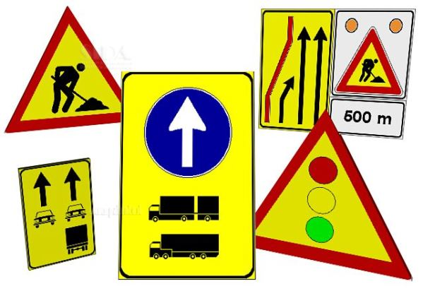

1. Conoscenza delle Norme e Regole del Traffico
La conoscenza delle norme stradali è il fondamento dell'educazione stradale, ed è essenziale che ogni utente della strada sia a conoscenza delle leggi e dei regolamenti che disciplinano la circolazione. Tra le principali norme da conoscere ci sono:
- Il codice stradale:
Ogni paese ha un Codice della Strada che stabilisce le regole di comportamento per chi guida, pedala o cammina. L'educazione stradale insegna a riconoscere i segnali stradali, a rispettare i limiti di velocità e a seguire le regole di precedenza.- Segnalatica stradale:
I segnali stradali, che si suddividono in segnali di pericolo, segnali di divieto, segnali di indicazione e segnali di priorità, sono molto importanti per garantire la sicurezza del traffico. È fondamentale che tutti gli utenti della strada imparino a capire correttamente questi segnali per prevenire confusione o situazioni pericolose.